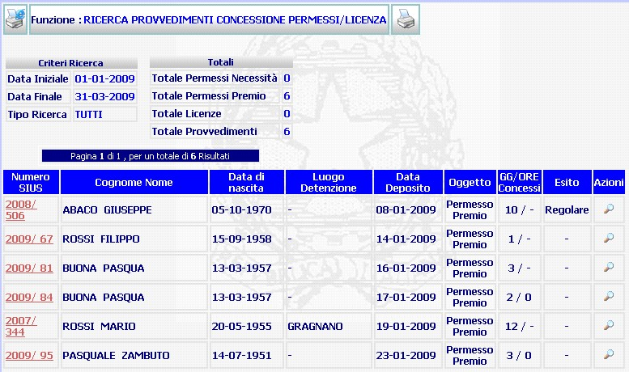

ELENCO PROVVEDIMENTI DI CONCESSIONE PERMESSO/LICENZA DEPOSITATI: La funzione consente di visualizzare l'elenco (ottenuto a seguito della ricerca dei provvedimenti concessi relativi a permessi/licenze) dei provvedimenti emessi e depositati durante un lasso temporale.
LE MASCHERE VIDEO
La funzione in esame viene realizzata attraverso la maschera che segue, essa è composta da più sezioni:
N.B.: nell'esempio è stata inserita la maschera riguardante una ricerca di provvedimenti depositati relativi a tutti i tipi di permesso, ma la stessa maschera con le medesime caratteristiche è utilizzata per visualizzare il risultato di una ricerca più mirata.

COME FARE PER ...
| Per visualizzare il dettaglio del procedimento Sius l'utente deve cliccare sul link relativo all' Anno/Numero del procedimento Sius evidenziato in rosso; |

| Per
visualizzare il dettaglio
esecuzione permesso, l'utente deve cliccare sul pulsante
|
| Per visualizzare, se
presente, un'altra pagina occorre:
|

CAMPI
non ci sono campi da compilare nella presente maschera.
PULSANTI
E' presente il pulsante
 di stampa del contesto (videata)
di stampa del contesto (videata)
|
PULSANTE |
DESCRIZIONE |
|
|
Questo pulsante ha lo scopo di visualizzare il dettaglio esecuzione permesso , se invece la ricerca interessa i provvedimenti concessi relativi a licenze visualizza il dettaglio esecuzione licenze. |
|
|
Questo pulsante ha lo scopo di consentire la generazione della stampa della missiva di trasmissione della relazione Trimestrale e l'elenco dei provvedimenti di concessione emessi nel periodo indicato nella fase di ricerca. |